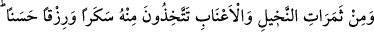
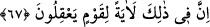
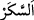

kanı karışırsa ihlâstan uzak olur ve makbûl olmaz. Çünkü amelde gösteriş yapmak, gizli
şirktir. Hevâ karışınca amelin saflığı ortadan kalkar.
Bulaşık tâat bir işe yaramaz
Tozlu topraklı misk fayda vermez
Bulaşıklığa düşen kimse
Pak nazarlar önünde parlak olmaz
Âyette Allah’ın suladığı hayvânî nefislerin karınlarındaki şeylerde akıl sâhibi
kimseler için ibretler olduğuna işâret vardır. Bunlar tıpkı şeytânî havâtır fışkısı ile
nefsânî havâtır kanı arasından çıkan rabbânî ilhamların hâlis sütüdür. Onu içmeye ehil
olanlar, hiç duraklamadan sırât-ı müstakîm üzere yürür giderler. et-Te’vîlâtü’n-
Necmiyye’de böyle geçmektedir.
67. Hurma ve üzüm gibi meyvelerden hem içki hem de güzel gıdalar edinirsiniz.
İşte bunlarda da aklını kullanan kimseler için büyük bir ibret vardır.
“Hurma ve üzüm gibi meyvelerden” meyvelerin sularından “hem içki hem de”
hurma, pekmez, kuru üzüm, şıra, sirke gibi “güzel gıdalar edinirsiniz.” Ey insanlar!
Hurma ve üzüm ağaçlarının türlü türlü meyvelerinden size yedirir ve onların sularından
içiririz.
el-Kâmûs’ta der ki: “
, içki ve hurmadan elde edilen hurma şırası (nebîz)
demektir.”
Bu âyet içkinin haram kılınmasından önce inmiştir. İçkinin çirkinliğine işâret
etmektedir. Çünkü güzel gıdaların mukâbilinde getirilmiştir. Güzelin mukâbili ise güzel
olmaz.
Hadis şöyle buyrulmuştur: “En iyi sirkeniz, şaraptan elde ettiğiniz sirkedir.” [162]
er-Ravda’da der ki: “Me’mun, Merv’de insanlara hitâb etti. Bu esnada insanları bir
öksürme tuttu. Onlara: ‘Kimin öksürüğü varsa, sirke içerek tedavi olsun.’ diye seslendi.
Onlar da öyle yaptılar ve öksürükleri kesildi.”
Bazıları der ki: Süt, içki ve güzel gıdanın nasıl haber verildiğine bir bak. Sütün
meydana gelişi insan eliyle olmadığı için Allah Teâlâ onun hakkında “size …
içiriyoruz.” buyurdu. İçki ve güzel gıdayı insan ürettiği için “edinirsiniz” buyurdu.
“İşte bunlarda da” bu yiyecek ve içeceklerde “aklını” Allah’ın âyetleri konusunda
tefekkür ve düşünce için “kullanan kimseler için büyük” parlak ve açık “bir ibret